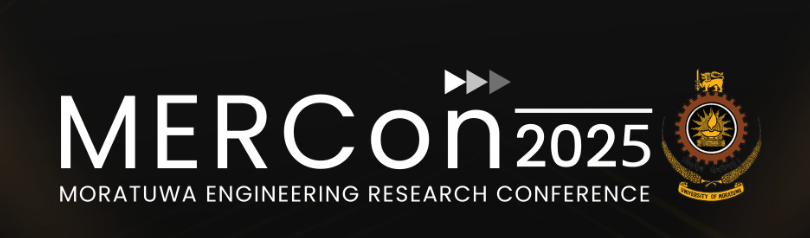
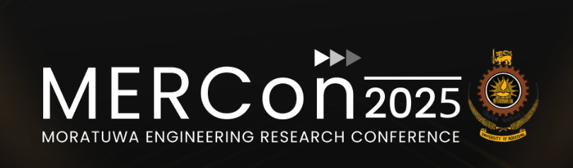

Facilitators

Dr. Dharshana Kasthurirathne
Sri Lanka Institute of Information Technology (SLIIT)
dharshana.k@sliit.lk
Dr. Dinuka Sahabandu
University of Washington (UoW)
sdinuka@uw.edu

Dr. Mahima Weerasinghe
Sri Lanka Institute of Information Technology (SLIIT)
mahima.w@sliit.lk

Mr. Chethiya Galkaduwa
Sri Lanka Institute of Information Technology (SLIIT)
rgalkadu@iu.edu
Mr. Asiri Gawesha
Graduate Teaching (PhD Student) Indiana University Assistant
asiri.l@sliit.lk

Mr. Sanka Mohottala
Sri Lanka Institute of Information Technology (SLIIT)e
sanka.m@sliit.lk
Abstract / Content

As deep learning models become increasingly complex, deploying them on resource-constrained devices poses significant challenges. Tiny Machine Learning (TinyML) addresses this by enabling ultra-compact, low-power AI models suitable for embedded systems and real-time sensor analytics.
This workshop will introduce key model compression techniques, including pruning, quantization-aware training, post-training quantization, and knowledge distillation, along with efficient network design strategies.
Through theory and hands-on sessions, participants will learn how to optimize and deploy deep learning models on embedded and mobile platforms, preparing them for practical applications in resource-limited environments.
Workshop Agenda
| Time | Session | Description |
|---|---|---|
| 15–20 mins | Introduction and Motivation | Overview of TinyML, challenges, and industrial trends |
| 30–40 mins | Theoretical Background | Model compression, parameter-efficient architectures, and bio-inspired designs |
| 1 hour | Hands-On Session 1 | Pruning, QAT, and knowledge distillation |
| 1 hour | Hands-On Session 2 | Developing parameter-efficient models with case studies |
| 45–60 mins | Hands-On Session 3 | Deploying models on hardware platforms |
| 15–20 mins | Summary & Q&A | Discussion and workshop wrap-up |
Organizers
| Photo | Name | Position | Affiliation | |
|---|---|---|---|---|
 |
Dr. Dinuka Sahabandu | Assistant Teaching Professor | University of Washington | sdinuka@uw.edu |
 |
Mr. Asiri Gawesha | Graduate Research Assistant (MPhil Student) | SLIIT | asiri.l@sliit.lk |
 |
Mr. Chethiya Galkaduwa | Graduate Teaching Assistant (PhD Student) | Indiana University | rgalkadu@iu.edu |
 |
Mr. Sanka Mohottala | Graduate Research Assistant (MPhil Student) | SLIIT | sanka.m@sliit.lk |
 |
Dr. Mahima Weerasinghe | Senior Lecturer (Higher Grade) | SLIIT | mahima.w@sliit.lk |
 |
Dr. Dharshana Kasthurirathna | Assistant Professor | SLIIT | dharshana.k@sliit.lk |
 |
Dr. Samitha Somathilaka | Postdoctoral Researcher (Invited Speaker) | University of Nebraska-Lincoln | ssomathilaka2@unl.edu |
.png) 

This page was generated by GitHub Pages.